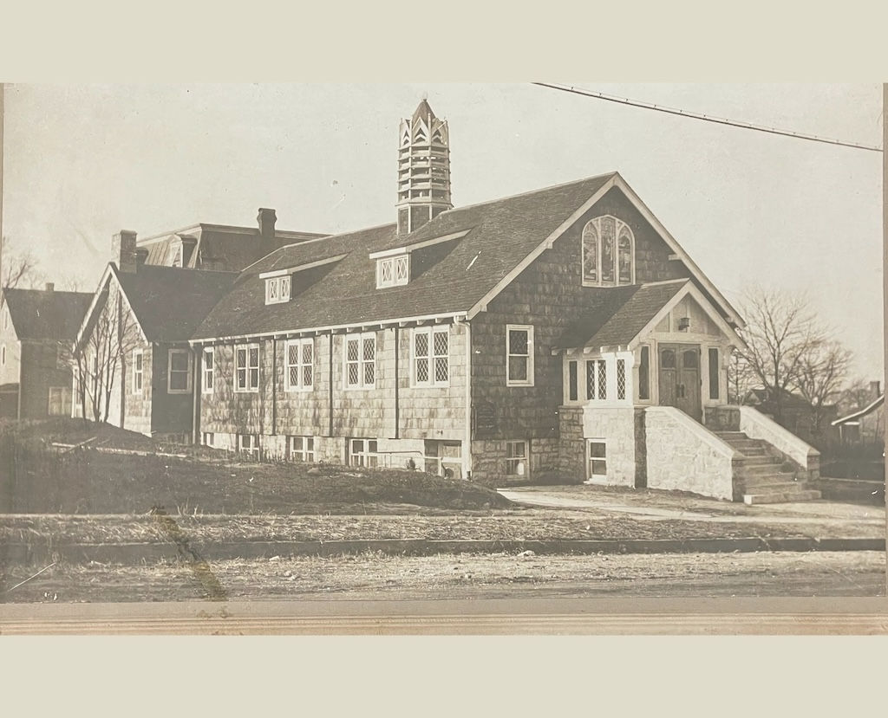
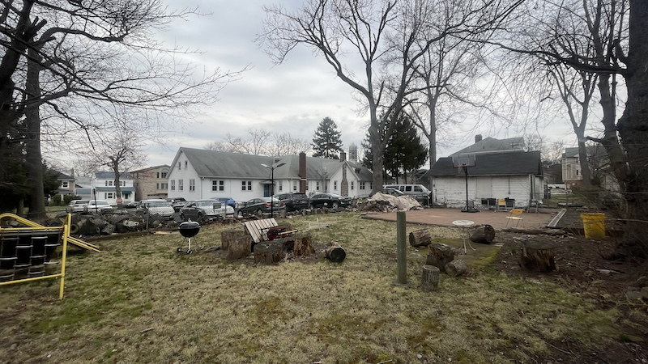
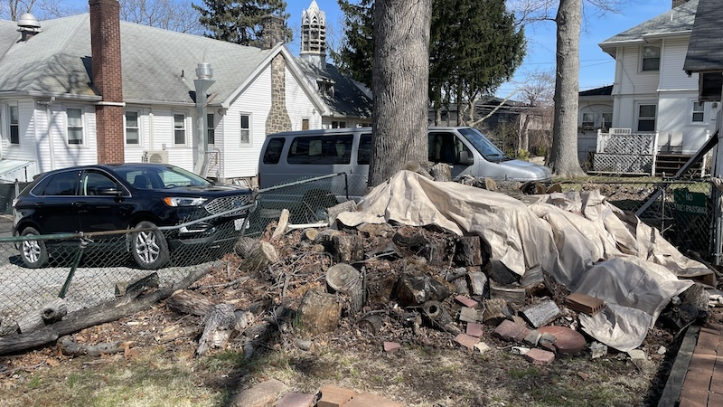
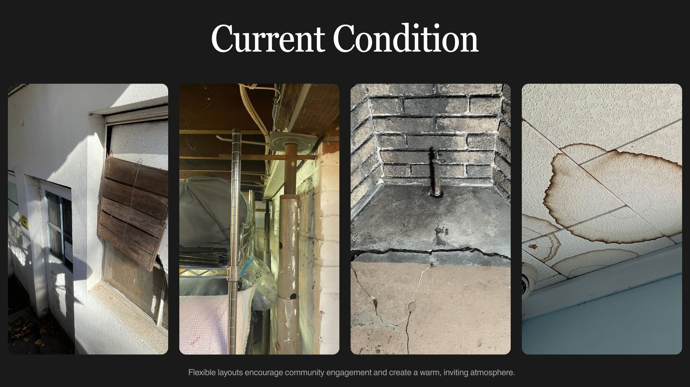
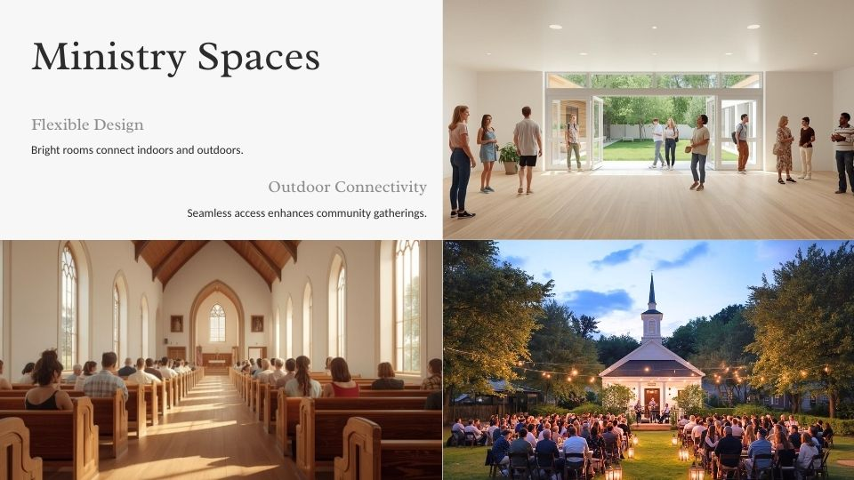
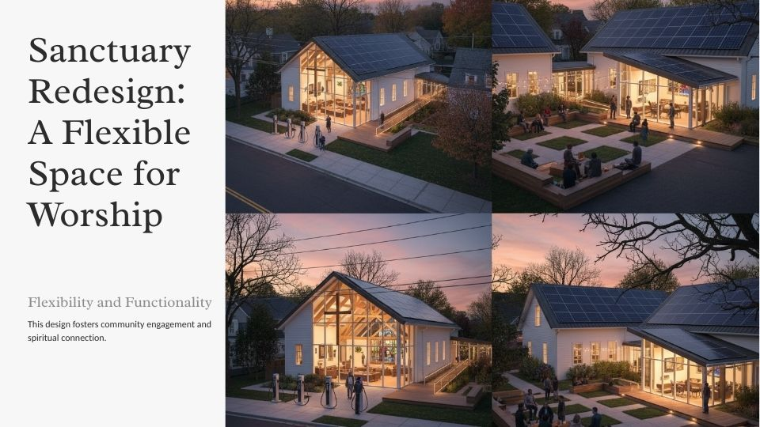
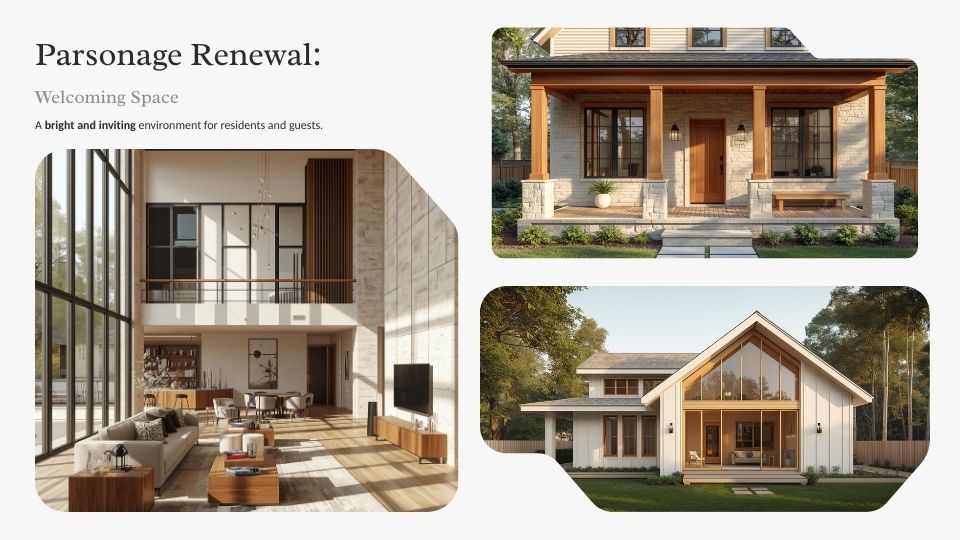

117 years of worship, fellowship, and community service.
Help us rebuild for the next generation.
Founded as the Union Chapel in 1897 and chartered as First Presbyterian Church in 1909, our congregation has been a beacon of hope in Palisades Park for generations.
From the generous gifts of the Edsall family that built our sanctuary and bell tower, through the Great Depression, World War eras, and the beautiful multi-ethnic revival since the 1980s — we have worshiped in English, Mandarin, Korean, and Spanish, serving over 200 families through our 12 co-host4ed programs, and short-term missions.

The sanctuary, parsonage, grounds, and outbuildings are in critical condition after decades of use and weather.

Tree stumps, debris, unsafe parking, and unusable outdoor space.

Cracked foundations, collapsed sheds, and unsafe parking areas.

Failing HVAC, water damage, outdated wiring, and accessibility barriers.



Every gift — large or small — helps fund daily operations, community programs, and the full 2026 renovation.
DONATE SECURELY NOW